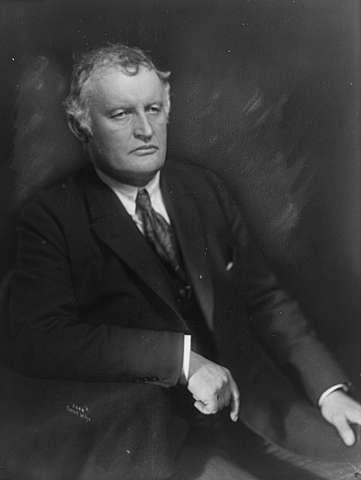
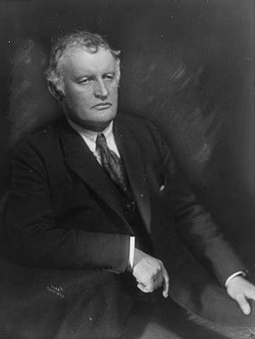

Edvard Munch
Quem foi? Aonde e quando nasceu e morreu? Estilo de arte?

A arte é uma forma de o ser humano expressar suas emoções, sua história e sua cultura através de alguns valores estéticos, como beleza, harmonia, equilíbrio. A arte pode ser representada através de várias formas, em especial na música, na escultura, na pintura, no cinema, na dança, entre outras.
A arte está presente em nossa vida desde os tempos mais remotos da humanidade. Os primeiros registros artísticos conhecidos são as obras de arte pré-histórica, que incluem a arte rupestre, pequenas esculturas e construções megalíticas..


Quem foi? Aonde e quando nasceu e morreu? Estilo de arte?
Quem foi? Aonde e quando nasceu e morreu? Estilo de arte?
Quem foi? Aonde e quando nasceu e morreu? Estilo de arte?